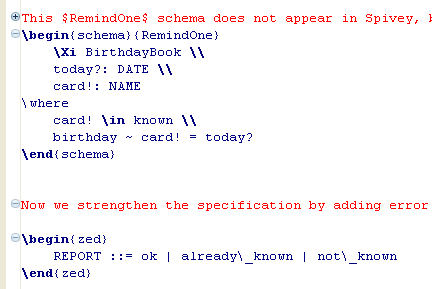

The Z paragraphs can be folded in the CZT editor as shown below.

The “+” before a folded paragraph indicates that the paragraph can be expanded to show its contents in the editor, while the “-” indicates that the paragraph can be collapsed to show only the first line of the paragraph.
By default, all kinds of Z paragraphs are to be folded in the editor. Users can enable/disable the folding feature, choose a certain set of Z paragraph type to be folded, in the editor through the Folding preference page.